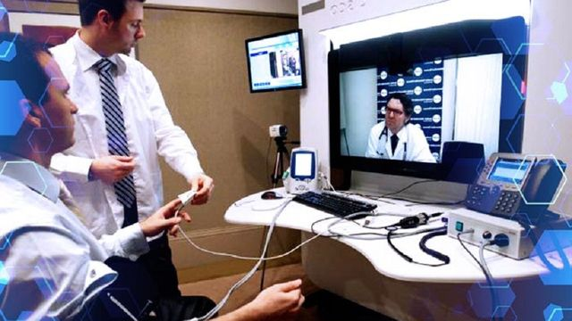

Bienvenido a mi Portafolio, te invito a deslumbrarte con mi experencia en previos trabajos, para que me tomes en cuenta en tu próximo proyecto.
"Vamo'a darle" -Tú
Web Application & Phone App (Android & iOS)
Tecnologías utilizadas: React Native & Angular 2+
Aplicación destinada a consultas médicas vía remota con doctores del país.
Fecha de Ejecución: 13/03/2018
Web Application
Tecnologías utilizadas: React Native & Angular 2+
Aplicación cuya finalidad radica en la gestión telefónica que está detrás de una de las empresas más emblemáticas del país 'DigYtal'.
Fecha de Ejecución: 22/12/2017
Web Application & Phone App (Android & iOS)
Tecnologías utilizadas: React Native & Angular 2+
Aplicación de gestión empresarial, cuyo principal objetivo es, por manejo estadístico, dar a relucir las debilidades de la empresa para tomar cartas en el asunto.
Fecha de Ejecución: 20/07/2019
Hola, mi nombre es Sarkis Bazdikian.
Soy un estudiante de Ingeniería de Sistemas de la UNIMET cuyo objetivo a corto plazo es graduarme, y a la larga convertirme en un excelente ingeniero Full-Stack.
Mi mayor motivación es que me encanta la programación, cuando se trata de retos lógicos me divierto rompiéndome el coco hasta lograr mis objetivos.
Fanático de los videojuegos, hipster en el baile, adoro el arte de la artista gráfica "Aenami", que como podrás ver todos los fondos utilizados en este Portafolio fueron creados por ella.